目录
如何训练大型深度神经网络极具挑战性，因为它需要大量的 GPU 显存和漫长的训练时间。本文回顾了几种流行的训练并行范式，以及多种模型架构和显存优化设计，从而能够在大量 GPU 上训练非常庞大的神经网络。
[2022-03-13 更新：增加 expert choice routing。] [2022-06-10 更新]：Greg 和我共同撰写了一个更简洁、更新的版本，发布在 OpenAI Blog：《训练大型神经网络的技术》
近年来，我们在许多 NLP 基准任务上看到，采用更大规模的预训练 泛化语言模型 能获得更好的结果。但训练大型且深层的神经网络极具挑战性，因为它需要大量 GPU 显存和漫长的训练时间。
然而单个 GPU 的显存有限，许多大型模型的规模早已超过单张 GPU 的容量。有几种并行范式可以实现跨多 GPU 的模型训练，同时还有多种模型架构和显存优化设计，帮助我们能够在大量 GPU 上训练极其庞大的神经网络。
训练并行策略#
训练超大型神经网络模型的主要瓶颈在于对 GPU 显存的极高需求，远超单台 GPU 机器所能承载的容量。除了模型权重（例如数百亿个浮点数），存储中间计算结果（如梯度和优化器状态，例如 Adam 中的动量和方差）通常更加昂贵。此外，训练大型模型往往搭配大规模语料，单个进程可能需要耗费极长时间。
因此，并行化必不可少。并行可以在不同维度上实现，包括数据、模型架构和张量运算。
数据并行#
最朴素的数据并行（Data Parallelism, DP）方式是将相同的模型权重复制到多个 Worker，每个 Worker 分配一部分数据同时进行处理。
当模型规模超过单台 GPU 节点的显存时，朴素 DP 无法很好工作。像 GeePS（Cui et al. 2016）这样的方法会将暂时不用的参数卸载回 CPU，以便在模型过大无法装入单机时仍能运行。数据交换传输应在后台进行，不干扰训练计算。
在每个小批量结束时，Worker 需要同步梯度或权重以避免过时。有两种主要同步方式，各有明确的优缺点。
折中的方案是每 x 次迭代全局同步一次梯度（x > 1）。这一特性在 PyTorch v1.5 引入的 Distributed Data Parallel（DDP）中被称为“梯度累积”（Li et al. 2021）。梯度分桶（Bucketing）避免了立即执行 AllReduce，而是将多个梯度打包到一个 AllReduce 中以提高吞吐量。还可以基于计算图对计算和通信调度进行优化。

模型并行#
模型并行（Model Parallelism, MP）旨在解决模型权重无法装入单个节点的情况。它将计算和模型参数分布到多台机器上。与数据并行中每个 Worker 保存完整模型副本不同，MP 只在单个 Worker 上分配一部分模型参数，从而同时降低了显存占用和计算量。
由于深度神经网络通常由垂直堆叠的层构成，很自然的想法是按层分割大型模型，将连续的一小部分层放在一个 Worker 上作为一个分区。然而，朴素实现中让每个数据批次依次经过多个存在顺序依赖的 Worker，会产生大量等待气泡（bubble），导致计算资源严重利用不足。

流水线并行#
流水线并行（Pipeline Parallelism, PP）将模型并行与数据并行结合，以减少低效的“气泡”时间。其核心思想是将一个小批量拆分成多个微批次（microbatch），让每个阶段的 Worker 同时处理一个微批次。注意每个微批次都需要两次传递：一次前向、一次反向。Worker 间的通信只传输激活值（前向）和梯度（反向）。不同方法在这些传递的调度方式和梯度聚合方式上有所不同。分区数量（即 Worker 数量）也称为流水线深度。
在 GPipe（Huang et al. 2019）中，来自多个微批次的梯度会在最后同步聚合并更新。这种同步梯度下降能保证无论 Worker 数量多少，学习过程始终保持一致性和高效性。如图 3 所示，气泡仍然存在，但比 m 个均匀分割的微批次和 d 个分区的情况要小得多。假设每个微批次的前向和反向各需 1 个单位时间，气泡占比为：
GPipe 论文观察到，当微批次数量超过分区数量的 4 倍以上（m > 4d，应用激活重计算后），气泡开销几乎可以忽略不计。
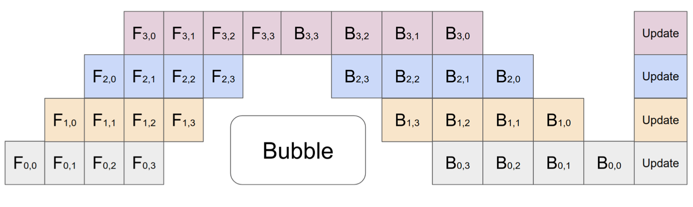
GPipe 能随着设备数量几乎实现线性吞吐量提升，不过当模型参数在 Worker 间分布不均时，这一优势并不总是能保证。
PipeDream（Narayanan et al. 2019）让每个 Worker 交替执行前向和反向传递（1F1B）。PipeDream 将每个模型分区称为“stage”，每个 stage 的 Worker 可以有多个副本以运行数据并行。在此过程中，PipeDream 使用确定性的轮询负载均衡策略，在 stage 的多个副本间分配工作，以确保同一个小批次的前向和反向传递发生在同一个副本上。
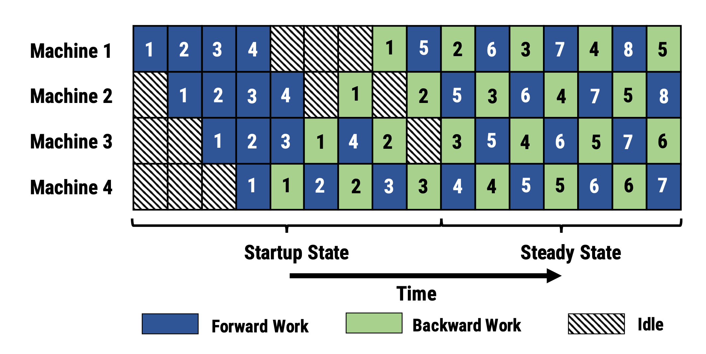
由于 PipeDream 没有在所有 Worker 间进行批次结束时的全局梯度同步，原生的 1F1B 实现很容易导致一个微批次的前向和反向使用不同版本的模型权重，从而降低学习效率。PipeDream 提出了一些设计来解决这个问题：
在训练开始时，PipeDream 先分析模型中每一层的计算显存开销和时间，然后用动态规划求解如何将层划分到各个 stage 的最优方案。
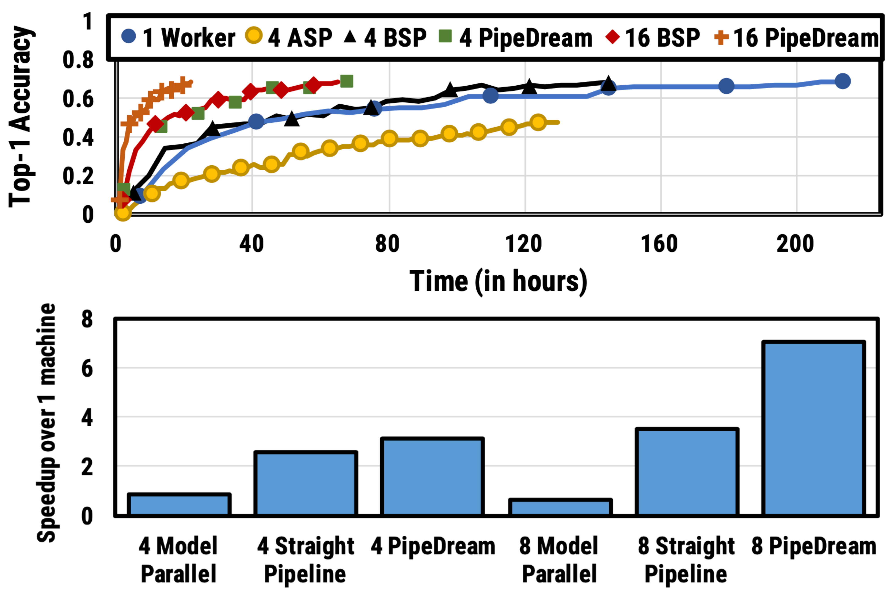
后来提出了 PipeDream 的两个变体，以减少因暂存模型版本而带来的显存占用（Narayanan et al. 2021）。
PipeDream-flush 周期性地加入全局同步的流水线刷新（flush），类似于 GPipe。这样可以大幅减少显存占用（即只维护单个版本的模型权重），代价是略微牺牲吞吐量。
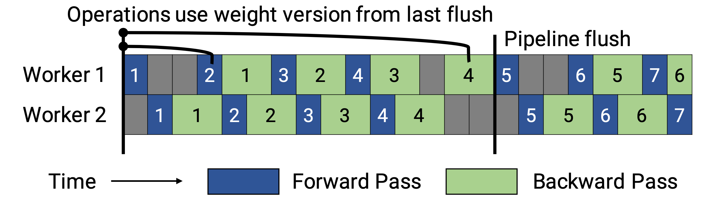
PipeDream-2BW 只维护两个版本的模型权重，“2BW”即“double-buffered weights”（双缓存权重）。它每 k 个微批次生成一个新模型版本，且 k 应大于流水线深度 d、k > d。新更新的模型版本不能立即完全取代旧版本，因为仍有部分尚未完成的反向传递依赖旧版本。总共只需保存两个版本，因此显存开销大幅降低。
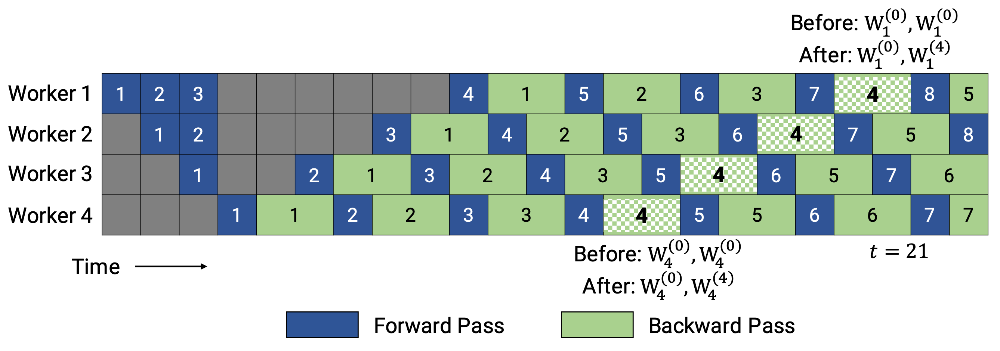
张量并行#
模型并行和流水线并行都是垂直分割模型。另一方面，我们也可以水平分割单个张量运算的计算，将其分布到多个设备上，这就是张量并行（Tensor Parallelism, TP）。
以目前非常流行的 Transformer 为例。Transformer 主要由多层 MLP 和自注意力块构成。Megatron-LM（Shoeybi et al. 2020）采用了一种简单的方式来并行化 MLP 和自注意力块的层内计算。
Transformer 中的 MLP 层包含一次 GEMM（通用矩阵乘法）后接非线性 GeLU 变换。我们按列分割权重矩阵 A：
注意力块则按照上述分割方式并行计算 Query（Q）、Key（K）和 Value（V）的 GEMM，然后再用另一次 GEMM 合并得到注意力头的结果。

Narayanan et al. (2021) 将流水线并行、张量并行和数据并行结合，并提出了一种新的流水线调度策略，称之为 PTD-P。不同于只在一个设备上放置连续的一组层（“model chunk”），每个 Worker 可以被分配多个更小的连续层子集（例如设备 1 拥有层 1、2、9、10；设备 2 拥有层 3、4、11、12；每个设备有两个 model chunk）。一个批次中的微批次数量必须能被 Worker 数量整除（m % d = 0）。如果每个 Worker 有 v 个 model chunk，那么与 GPipe 调度相比，流水线气泡时间可以减少 v 倍。
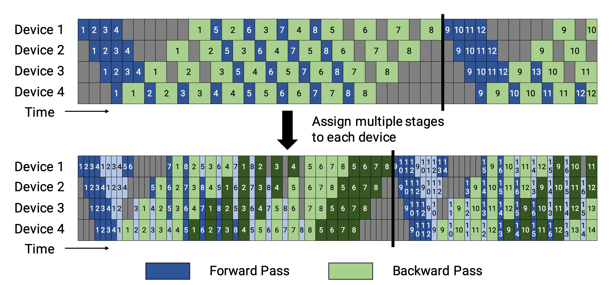
专家混合（Mixture-of-Experts, MoE）#
最近，随着研究者（主要是 Google）不断突破模型规模极限，专家混合（Mixture-of-Experts, MoE）方法受到了极大关注。其核心思想来自 集成学习：多个弱学习者的组合可以得到一个强学习者！
在一个深度神经网络中，集成可以通过一个门控机制连接多个专家来实现（Shazeer et al., 2017）。门控机制决定网络的哪一部分（例如哪些专家）应该被激活来产生输出。论文将其称为“稀疏门控专家混合”（sparsely gated mixture-of-experts, MoE）层。
精确地说，一个 MoE 层包含：
根据门控输出，并非每个专家都需要被计算。当专家数量过多时，我们可以考虑使用两级分层 MoE。

一个简单的 G 选择是：将输入与可训练权重矩阵 G_g 相乘，然后做 softmax：G_\sigma (x) = \text{softmax}(x W_g)。但这会产生稠密的控制向量，无法节省计算资源，因为只有当 G^{(i)}(x)=0 时我们才不需要计算某个专家。因此 MoE 层只保留 top k 个值。它还会向 G 中加入可调的高斯噪声以改善负载均衡。这种机制称为 noisy top-k gating。
其中上标 v^{(i)} 表示向量 v 的第 i 维。函数 \text{topk}(., k) 通过将其他维度置为 -\infty 来选出值最高的 top k 维。
为了避免门控网络总是偏好少数几个强专家而产生的自我强化效应，Shazeer et al. (2017) 提出通过增加一个重要性损失（importance loss）来施加软约束，鼓励所有专家获得相近的权重。它等价于每个专家批次平均值的变异系数（coefficient of variation）的平方。
其中 \text{CV} 是变异系数，损失权重 w_\text{aux} 是一个需要调优的超参数。
由于每个专家网络只能获得一部分训练样本（“批次缩小问题”），在 MoE 中我们应尽量使用更大的批次大小。但这受限于 GPU 显存。数据并行和模型并行都可以用来提升吞吐量。
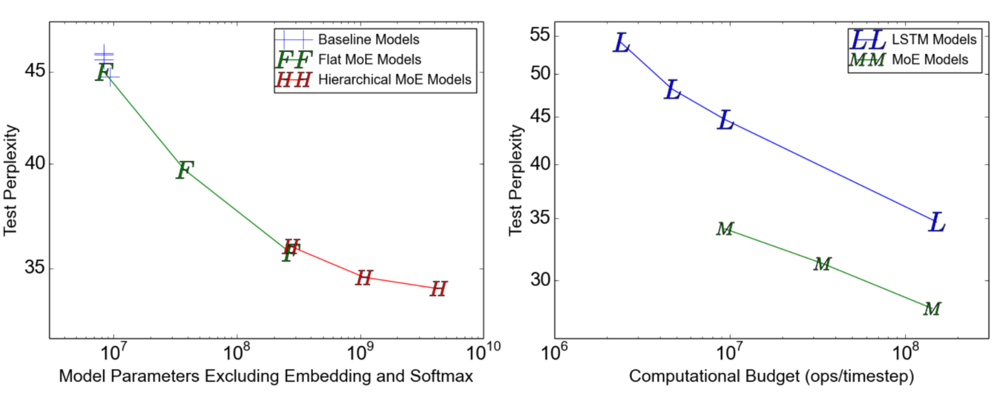
GShard（Lepikhin et al., 2020）通过分片（sharding）将 MoE Transformer 模型扩展到 6000 亿参数。MoE Transformer 将每隔一层的前馈层替换为 MoE 层。分片的 MoE Transformer 只对 MoE 层进行跨机器分片，其他层则简单地复制。
GShard 对门控函数 G 提出了几项改进设计：
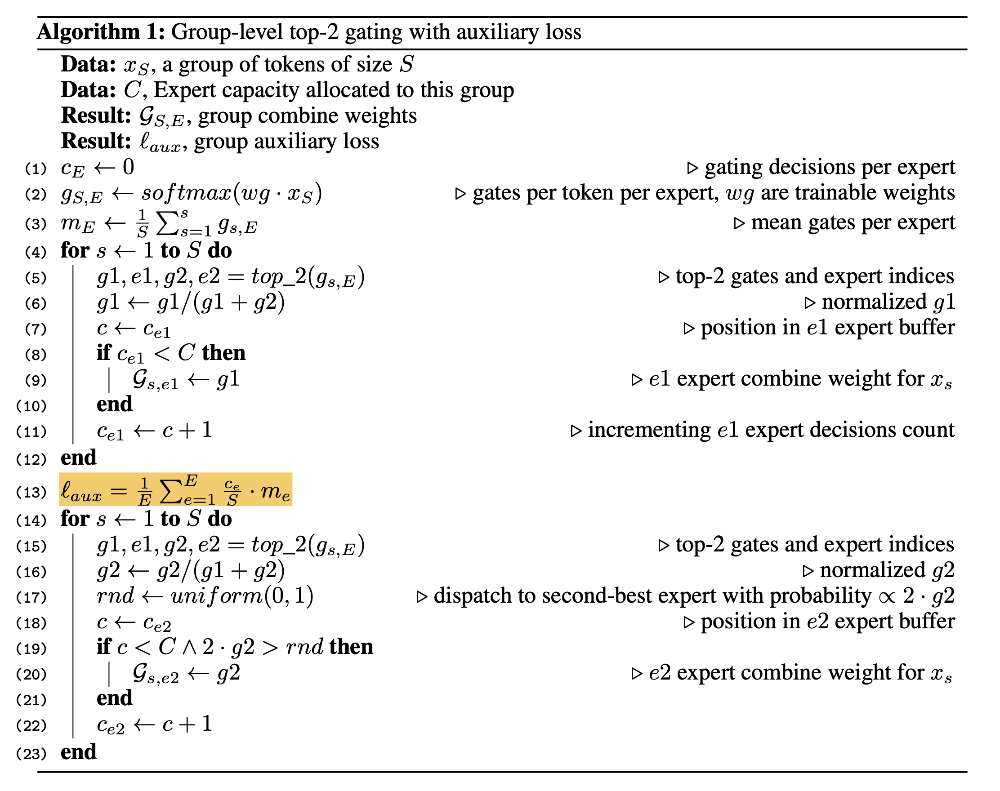
Switch Transformer（Fedus et al. 2021）通过将稠密前馈层替换为稀疏的 Switch FFN 层，将模型规模扩展到万亿参数（！！），其中每个输入只被路由到一个专家网络。用于负载均衡的辅助损失为 \text{loss}_\text{aux} = w_\text{aux} \sum_{i=1}^n f_i p_i，共有 n 个专家，其中 f_i 是路由到第 i 个专家的 token 比例，p_i 是门控网络预测的专家 i 的路由概率。
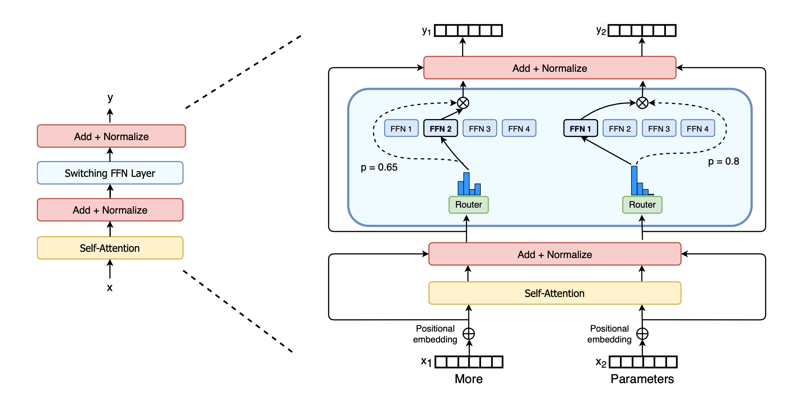
为了提高训练稳定性，Switch Transformer 采用了以下设计：
Switch Transformer 论文用一张清晰的图总结了训练大型模型时不同的数据并行和模型并行策略：
GShard 的 top-2 和 Switch Transformer 的 top-1 都依赖于 token 选择，即每个 token 挑选最好的一或两个专家进行路由。它们都采用辅助损失来鼓励更均衡的负载分配，但这并不能保证最佳性能。此外，专家容量限制可能导致 token 被浪费——当专家达到容量上限时，这些 token 会被丢弃。
专家选择（Expert Choice, EC）（Zhou et al. 2022）路由则让每个专家自主选择 top-k 个 token。这样每个专家天然保证固定容量，每个 token 也可能被路由到多个专家。EC 可以实现完美的负载均衡，并能将训练收敛速度提高 2 倍。
给定 e 个专家和输入矩阵 X \in \mathbb{R}^{n \times d}，token 到专家的亲和度分数通过以下方式计算：
token 到专家的分配由三个矩阵表示：I, G \in \mathbb{R}^{e\times k} 和 P \in \mathbb{R}^{e \times k \times n}。I[i,j] 标注了第 i 个专家的第 j 个选择是哪个 token。门控矩阵 G 存储被选中 token 的路由权重。P 是 I 的 one-hot 版本，用于生成门控 FFN 层的输入矩阵（P \cdot X \in \mathbb{R}^{e \times k \times d}）。
专家选择路由探索的一种正则化方式是限制每个 token 最多能被多少个专家选择。
其中 A \in \mathbb{R}^{e \times n} 的每个元素 A[i,j] 标记第 i 个专家是否选择了第 j 个 token。求解这个问题并不简单。论文使用了 Dykstra’s algorithm，它会运行一系列多次迭代的计算步骤。带容量限制的专家选择在实验中会导致微调性能略有下降。
参数 k 由 k=nc/e 决定，其中 n 是一个批次中的总 token 数，c 是容量因子，表示平均每个 token 使用的专家数量。论文在大多数实验中使用 c=2，但即使使用 c=1 的 EC 仍然优于 top-1 token 选择门控。有趣的是，c=0.5 对训练性能的损害非常轻微。
EC 的一个重大缺点是当批次大小太小时无法工作，也不适用于自回归文本生成，因为它需要知道未来的 token 才能进行 top-k 选择。
其他节省显存的设计#
CPU 卸载#
当 GPU 显存满载时，一个选择是将暂时不用的数据卸载到 CPU，需要时再读回（Rhu et al. 2016）。CPU 卸载的思想很简单，但近年来由于它会显著延长训练时间而不再流行。
激活值重计算#
激活值重计算（也称为“activation checkpointing”或“gradient checkpointing”；Chen et al. 2016）是一个聪明而简单的想法：在增加少量计算时间的前提下显著降低显存占用。它能将训练一个 \ell 层深度神经网络的显存开销降低到 O(\sqrt{\ell})，只需要额外对每个批次多做一次前向计算。
假设我们将一个 \ell 层的网络均匀分成 d 个分区，只保存分区边界处的激活值并在 Worker 间通信。分区内部层的中间激活值仍需用于计算梯度，因此会在反向传播时重新计算。使用激活重计算后，训练 M(\ell) 的显存开销为：
最小开销在 d=\sqrt{\ell} 时达到 O(\sqrt{\ell})。
激活重计算技巧能使显存开销相对于模型规模呈现次线性增长。

混合精度训练#
Narang & Micikevicius et al. (2018) 提出了一种使用半精度浮点数（FP16）训练模型且不损失模型精度的方法。
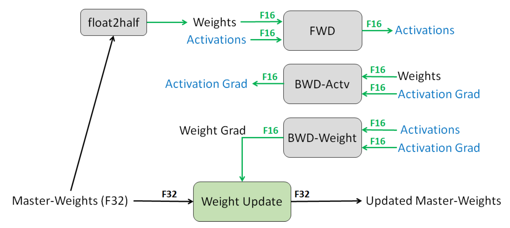
三种避免在半精度下丢失关键信息的技术：
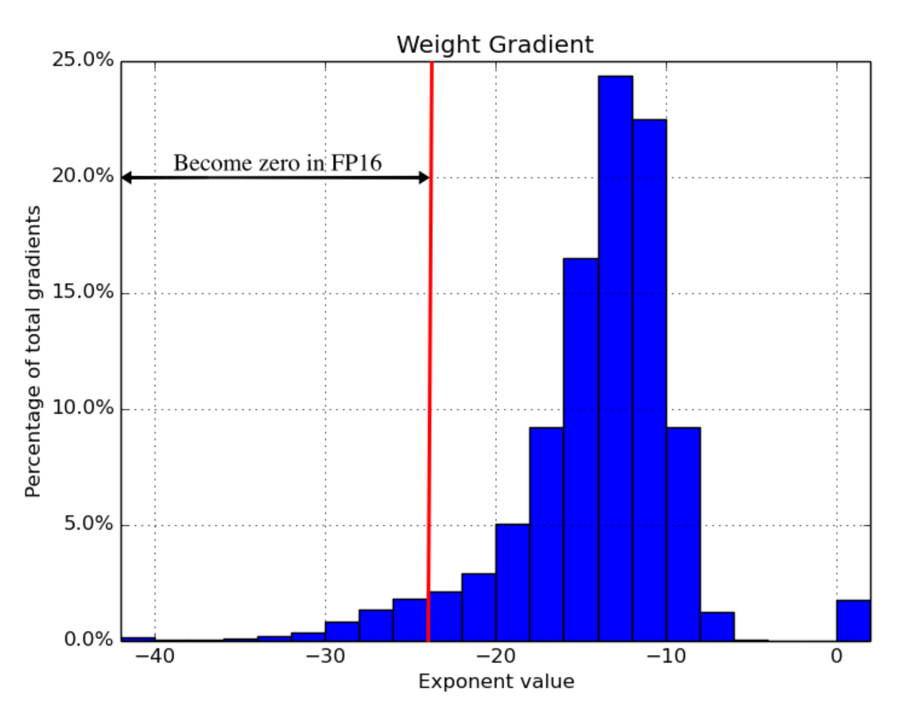
在他们的实验中，某些网络（例如图像分类、Faster R-CNN）不需要损失缩放，但其他网络（例如 Multibox SSD、大型 LSTM 语言模型）则必须使用。
压缩#
中间结果虽然只需要在前向和反向各使用一次，却常常占用大量显存。这两次使用之间存在明显的时序间隔。因此 Jain et al. (2018) 提出了一种数据编码策略，在第一次使用后对中间结果进行压缩，之后在反向传播时再解压回来。
他们的系统 Gist 采用了两种编码方案： 层特定的无损编码；重点针对 ReLU-Pool（“Binarize”）和 ReLU-Conv（“Sparse storage and dense computation”）模式。 激进的有损编码；使用延迟精度降低（Delayed Precision Reduction, DPR）。他们观察到特征图的第一次立即使用需要保持高精度，但第二次使用可以容忍较低精度。
实验表明，Gist 在 5 个 SOTA 图像分类 DNN 上能将显存开销降低约 2 倍，平均 1.8 倍，且性能开销仅为 4%。
显存高效优化器#
优化器非常“贪婪”地消耗显存。以流行的 Adam 优化器为例，它内部需要维护动量和方差，两者规模都与梯度和模型参数相当。一下子我们就需要为模型权重额外多保存 4 倍的显存。
已经提出了一些优化器来减少显存占用。例如，Adafactor（Shazeer et al. 2018）不再像 Adam 那样存储完整的动量和方差，而是只跟踪移动平均值的按行和按列求和，然后基于这些和来估计二阶矩。SM3（Anil et al. 2019）则描述了一种不同的自适应优化方法，同样能大幅降低显存占用。
ZeRO（Zero Redundancy Optimizer；Rajbhandari et al. 2019）基于对大型模型训练中两大主要显存消耗的观察，优化了训练大型模型的显存使用：
ZeRO 结合了两种方法：ZeRO-DP 和 ZeRO-R。 ZeRO-DP 是一种增强的数据并行，避免了对模型状态的简单冗余。它通过动态通信调度将优化器状态、梯度和参数在多个数据并行进程间进行分区，以最小化通信量。 ZeRO-R 则优化了残余状态的显存消耗，采用分区激活重计算、固定缓冲区大小以及即时内存碎片整理。
引用#
引用格式：
Weng, Lilian. (Sep 2021). How to train really large models on many GPUs? Lil’Log. https://lilianweng.github.io/posts/2021-09-25-train-large/。
@article{weng2021large,
title = "How to Train Really Large Models on Many GPUs?",
author = "Weng, Lilian",
journal = "lilianweng.github.io",
year = "2021",
month = "Sep",
url = "https://lilianweng.github.io/posts/2021-09-25-train-large/"
}
参考文献#
[1] Li et al. “PyTorch Distributed: Experiences on Accelerating Data Parallel Training” VLDB 2020.
[2] Cui et al. “GeePS: Scalable deep learning on distributed GPUs with a GPU-specialized parameter server” EuroSys 2016
[3] Shoeybi et al. “Megatron-LM: Training Multi-Billion Parameter Language Models Using Model Parallelism.” arXiv preprint arXiv:1909.08053 (2019).
[4] Narayanan et al. “Efficient Large-Scale Language Model Training on GPU Clusters Using Megatron-LM.” arXiv preprint arXiv:2104.04473 (2021).
[5] Huang et al. “GPipe: Efficient Training of Giant Neural Networks using Pipeline Parallelism.” arXiv preprint arXiv:1811.06965 (2018).
[6] Narayanan et al. “PipeDream: Generalized Pipeline Parallelism for DNN Training.” SOSP 2019.
[7] Narayanan et al. “Memory-Efficient Pipeline-Parallel DNN Training.” ICML 2021.
[8] Shazeer et al. “The Sparsely-Gated Mixture-of-Experts Layer Noam.” arXiv preprint arXiv:1701.06538 (2017).
[9] Lepikhin et al. “GShard: Scaling Giant Models with Conditional Computation and Automatic Sharding.” arXiv preprint arXiv:2006.16668 (2020).
[10] Fedus et al. “Switch Transformers: Scaling to Trillion Parameter Models with Simple and Efficient Sparsity.” arXiv preprint arXiv:2101.03961 (2021).
[11] Narang & Micikevicius, et al. “Mixed precision training.” ICLR 2018.
[12] Chen et al. 2016 “Training Deep Nets with Sublinear Memory Cost.” arXiv preprint arXiv:1604.06174 (2016).
[13] Jain et al. “Gist: Efficient data encoding for deep neural network training.” ISCA 2018.
[14] Shazeer & Stern. “Adafactor: Adaptive learning rates with sublinear memory cost.” arXiv preprint arXiv:1804.04235 (2018).
[15] Anil et al. “Memory-Efficient Adaptive Optimization.” arXiv preprint arXiv:1901.11150 (2019).
[16] Rajbhandari et al. “ZeRO: Memory Optimization Towards Training A Trillion Parameter Models Samyam.” arXiv preprint arXiv:1910.02054 (2019).
[17] Zhou et al. “Mixture-of-Experts with Expert Choice Routing” arXiv preprint arXiv:2202.09368 (2022).